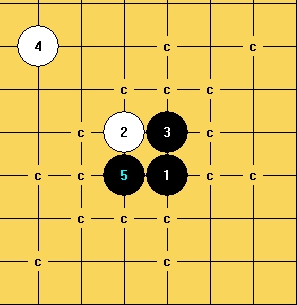
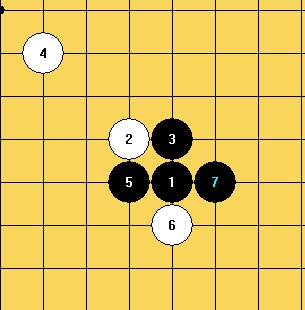
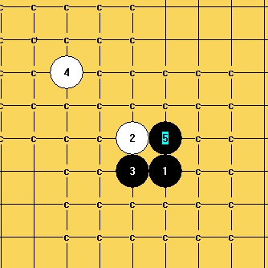
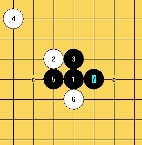

06测试和09一个问题
#1 06测试和09一个问题 作者：黑白子 发表时间：2009-8-2 23:14:42
比如下面局面，我扫描当前防守局面，出线下图

随意选择一个 ，点下面，到下图就结束了。这是09版本的

同样06测试版本


可以一直杀到最后。
不知道09怎么设置可以调成06测试那个样子？
#2 Re:06测试和09一个问题 作者：黄药师 发表时间：2009-8-2 23:56:19
 我也想知道这个问题！
我也想知道这个问题！
#3 Re:06测试和09一个问题 作者：侯军学棋 发表时间：2009-8-3 0:09:31
费点多了占内存啊#4 Re:06测试和09一个问题 作者：黄药师 发表时间：2009-8-3 22:42:20
谁告诉我怎么设置，奖励10朵花
#5 Re:06测试和09一个问题 作者：4 发表时间：2009-8-3 23:16:50
这里面有两个问题:
1.防点个数不一样.
2.没有详尽的杀的细节.
第一个问题:
防点个数问题,
08(09)版本,设置->VCT设置,中间拦靠上VC2设置,第二个下拉框"防守选点方法"里选PARTIAL POLYGON DEFEND
就和06的一样了
第二个问题,做较详尽谱问题:(刚试了下09版本CHN_FOUL_000.RAR不能弄详尽谱,可以用08版本CHN_FOUL.RAR)
设置->VCT
出现对话筐的最右栏里:
1,添加胜的分枝,弄勾,
2,生成LIB文件,弄勾,
3,用对弈算杀算法,去钩,
就可以做较为详尽的谱了.
把用对弈算杀去勾后就基本和06的一样了.
另1:扫描时候要是用对弈算杀的话,就应该用设置->对弈时双线算杀进行设置.
另2,为适应多核心机器,扫描时候,09的采用任意可设置多线算杀,
可能不会添加做详尽谱的功能了.
［ 失落刀 于 2009-12-13 8:02:49 时奖励此帖[金币加 20 威望加1］
#6 Re:06测试和09一个问题 作者：黄药师 发表时间：2009-8-3 23:27:01
做详尽谱的功能 是个很好的功能啊 。
。
我只有06测试和09咋办
#7 Re:06测试和09一个问题 作者：极地剑客 发表时间：2009-12-13 6:12:47
又跟小四学了一着。。。#8 Re:06测试和09一个问题 作者：岑小鱼 发表时间：2009-12-13 10:38:00
06测试版本的
第一个问题: 经常会出现活三后有几手（不超过5手）就能43win了却要手动再添加一手才扫描出来
而另外一头的杀超过10手 却已经完全扫描出来了??? 怪事!!!
第二个问题: 碰到过5次以上 把33禁手当杀的情况
#9 Re:Re:06测试和09一个问题 作者：wd1988 发表时间：2009-12-13 11:38:44
引用：
原文由 岑小鱼 发表于 2009-12-13 10:38:00 :06测试版本的
第一个问题: 经常会出现活三后有几手（不超过5手）就能43win了却要手动再添加一手才扫描出来
而另外一头的杀超过10手 却已经完全扫描出来了??? 怪事!!!
第二个问题: 碰到过5次以上 把33禁手当杀的情况
一、06的VCF功能比VCT强
二、禁手当成杀是BUG，所谓的测试版，其实就是破解了的，请使用新版
#10 Re:06测试和09一个问题 作者：极地剑客 发表时间：2009-12-13 12:08:32
其实俺昨天想在另一个贴里说一些设置的~刚好你就遇到这个问题了哈~继续潜水~用新版吧~不过新版设置不好你会发现扫描还没06快~